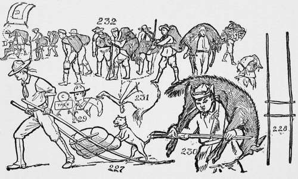

Men Who Have Carried The Pack
Description
This section is from the book "The Book Of Camp-Lore And Woodcraft", by Dan Beard. Also available from Amazon: The Book of Camp-Lore and Woodcraft.
Men Who Have Carried The Pack
The whole north country is sprinkled with the bones of the men who fought their packs. Our own land is also sprinkled with men we call "misfits" and failures, but who are really men who have fought their packs. But every post of eminence in the United States is occupied by a man who forgot his pack; this country was built by men who forgot their packs. George Washington carried a portage pack in weight all through his life, but it was a proud burden and he stood straight under it. Good old Abe Lincoln had even a heavier pack to carry, but in spite of the weight of it he always had a pleasant scout smile for everyone and a merry story to send the visitor away smiling. If Daniel Boone and Simon Kenton had fought their packs we would never have heard of them!
In the illustrations are shown many figures, and one should not forget that these are sketches of real men in the real wilderness, and not fancy pictures drawn from imagination. Figs. 230, 231 and 232 show many different methods of carrying big game on one's shoulders or back. Fig. 232 also shows a couple of prospectors on the trail. One has the bag on his back, held in place by shoulder straps; the other has a bag thrown over his shoulder like a ragman.
The alpine rucksack will carry—or to speak more properly —with it one can pack a camera, notebook, sketching material, lunch and all those things which a fellow wants on an enjoyable hike. The alpine rucksack is a many-gored poke about 18 inches wide and about 22 inches long without the gores. These pokes can be made so that the gores fold in and produce an ordinary-sized pack, or they may be pushed out like an umbrella so as to make a bag in which one can carry a good-sized boy.
Man Packing
The Broad Band
Fig. 232-D shows the broad band used by the men of the far north. The reader will note that the broad canvas bands come over the shoulders from the top of the pack; also that a broad breast band connects the shoulder bands, while rope, whang strings or thongs run through eyelets in the band and to the bottom of the pack. This is said to be the most comfortable pack used and has an interesting history; it was evolved from an old pair of overalls. There was a Hebrew peddler who followed the gold seekers and he took a pair of canvas overalls and put them across his breast, and to the legs he fastened the pack upon his back. The overalls being wide and broad did not cut his chest, as do smaller straps, thongs or whang strings.
But breast straps of any kind are not now recommended by all authorities. It is claimed that they interfere with the breathing and a fellow "mouching" along the trail needs to have his chest free to expand, for not only his speed but his endurance depends upon the free action of his lungs.
The Tump
Figs. 226 and 226 1/2 show the use of the celebrated tump strap. This tump strap is used from Central America to the Arctic Circle. The Mexican water carrier uses it to tote his burden; the Tete Bule Indian and the Montenais Indian in the Northeast also carry their packs with a tump line.
Fig. 226 1/2 shows how the tump line is made. It is a strap or lash rope with a broad band to fit over the packer's head, and thus relieve the weight which the shoulders have to bear.
Fig. 218 shows the well-known portage pack basket which is used by the guides in the Adirondack regions. Fig. 219 shows the Nessmuk knapsack. Fig. 222 shows a pack harness of straps by which two duffel bags are borne on the back. Fig. 225 shows a duffel bag which is laced up at one end with a thong; also the end of the bag open.
Continue to: